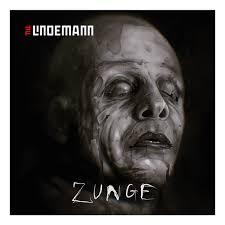

New Album
F & M (an abbreviation of Frau und Mann; German for "Woman and Man") is the second and final studio album by German-Swedish super-duo Lindemann. It was released on 22 November 2019 through Universal Music and Vertigo Berlin. The album was preceded by three singles; "Steh auf", "Ich weiß es nicht" and "Knebel", with "Steh auf" peaking at No. 8 in Germany.
Zunge
Skills in Pills
Upcoming Tour
Till Lindemann, exceptional artist and singer of the industrial metal group Rammstein, will grant audiences an insight into the depths of his world in 2025 - from the end of October until the end of the year, fans can look forward to over 25 raw and completely reconceptualized arena shows on his solo "Meine Welt" tour across 17 countries in Europe.